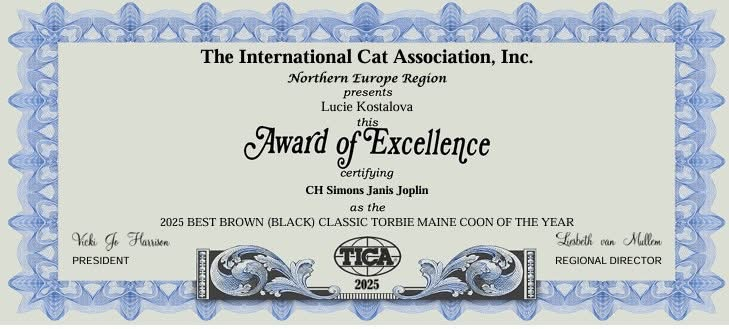
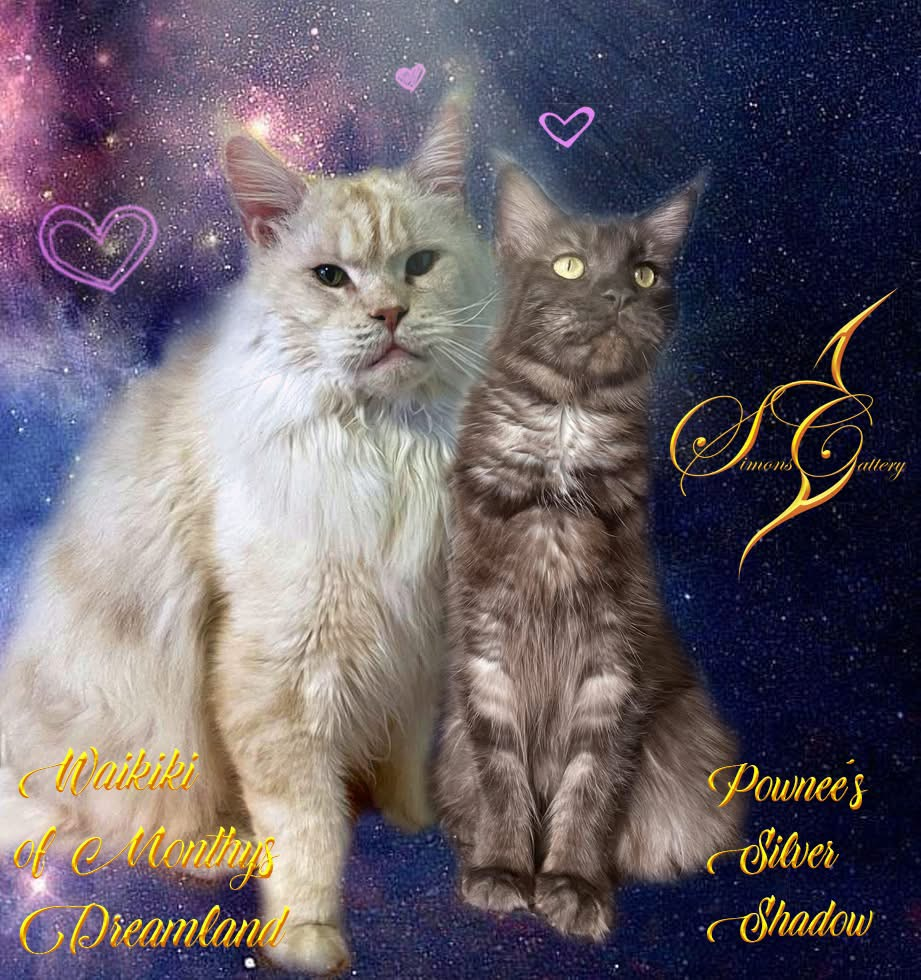
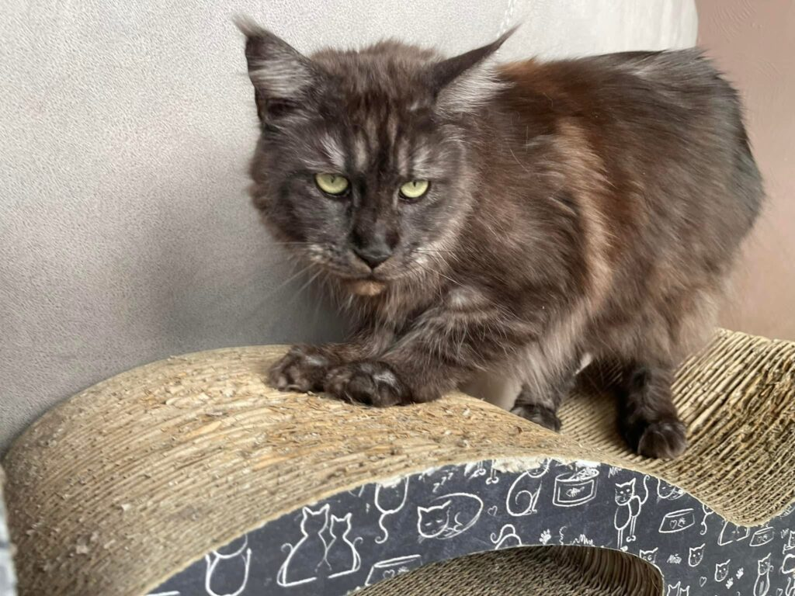
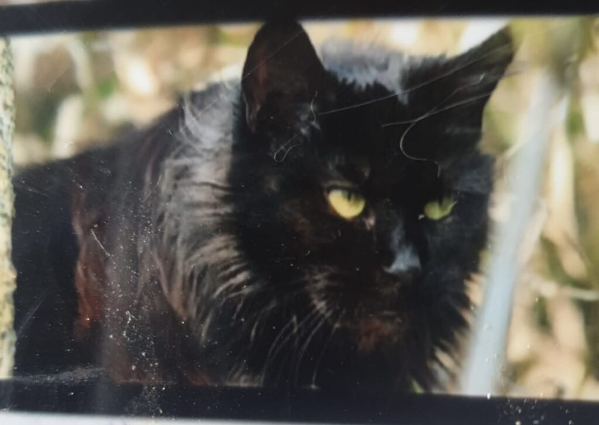
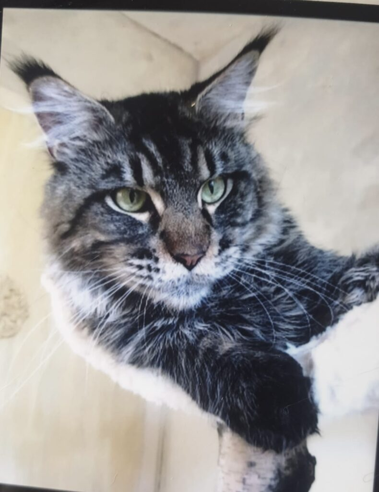
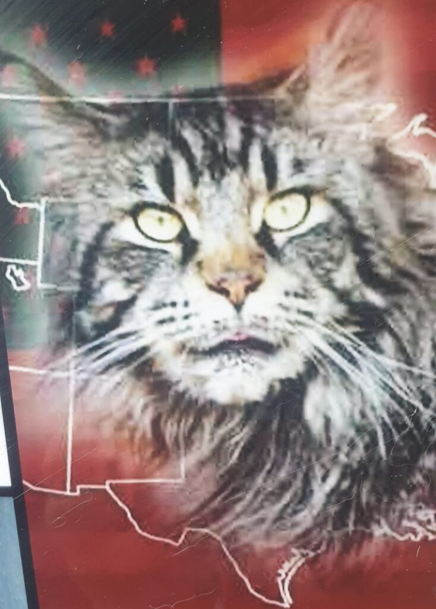
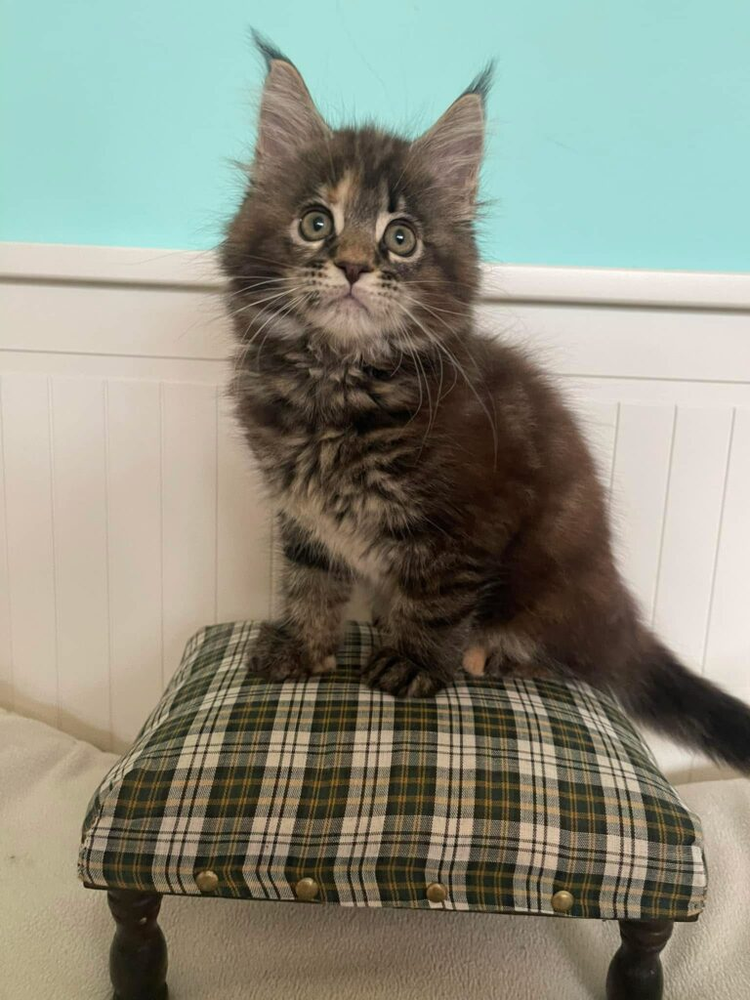
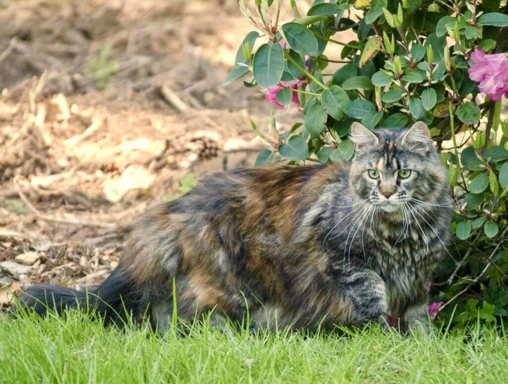
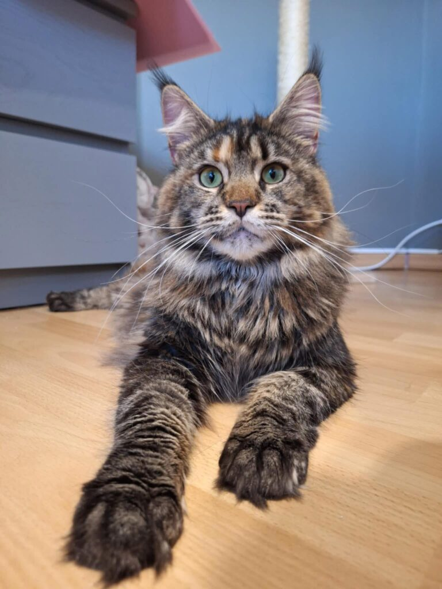

QueenChampion
CH Simons Janis Joplin is the TICA EN Region’s 2025 Best Brown (Black) Classic Torbie Maine Coon of the Year.
Born
14. 3. 2024
Breeder
Simons cattery
Colour
Brown Classic Torbie
Tests
DNA – negative · HCM N/N · PKD N/N · HD 0/0
Sire
Waikiki of Mouthys Dreamland
Dam
Pownee’s Silver Shadow
COI
16,2%
Pedigree
Joplin was our clear favourite from the day she was born — her temperament and tenderness, inherited from both parents, made the choice easy, and keeping her proved to be exactly right. As a one-year-old she earned her Champion title.








